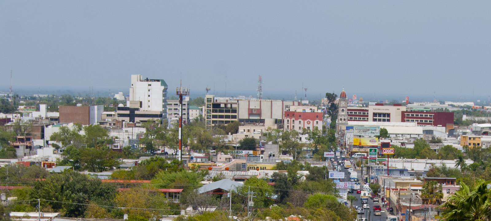
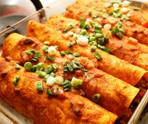

Conoce todo acerca de la capital de Tamaulipas

Ciudad Victoria fue fundada el 6 de octubre de 1750 por José de Escandón y Helguera con el nombre de Villa de Santa María de Aguayo. Su fundación formó parte de un proyecto para poblar y desarrollar la región conocida como Nuevo Santander, actualmente Tamaulipas. Con el paso de los años, la villa creció gracias a actividades como la agricultura y la ganadería. Después de la Independencia de México, adquirió una mayor importancia dentro del estado. El 20 de abril de 1825 fue declarada ciudad y se convirtió en la capital de Tamaulipas. Ese mismo año recibió el nombre de Ciudad Victoria en honor a Guadalupe Victoria, primer presidente de México. Desde entonces, Ciudad Victoria ha experimentado un constante crecimiento económico, social y cultural. Actualmente es el centro político y administrativo de Tamaulipas y una de las ciudades más importantes del estado.
Ciudad Victoria tiene un clima cálido, con veranos muy calurosos e inviernos suaves. Durante gran parte del año predominan las temperaturas altas, especialmente entre mayo y agosto, cuando pueden superar los 40 °C. En invierno las temperaturas son más frescas, aunque rara vez llegan a ser extremas. Las lluvias se presentan principalmente durante el verano y principios del otoño, siendo septiembre uno de los meses más lluviosos del año. La temperatura media anual es de aproximadamente 22 °C y la precipitación anual ronda entre 700 y 900 mm. Gracias a su ubicación cerca de la Sierra Madre Oriental, Ciudad Victoria combina días soleados con temporadas de lluvia que favorecen la vegetación de la región.
La gastronomía de Ciudad Victoria combina tradiciones del norte de México con ingredientes típicos de Tamaulipas. Entre los platillos más representativos se encuentran la carne asada, las gorditas rellenas, las enchiladas tamaulipecas y la barbacoa, que son muy populares entre los habitantes de la región. También destacan alimentos elaborados con carne de res, cabrito y cerdo, además de tortillas de maíz y harina que acompañan muchas comidas tradicionales. En cuanto a los postres, son comunes las glorias, los dulces de leche y las conservas de frutas. Las bebidas tradicionales incluyen el agua de frutas naturales y el café, que suele disfrutarse acompañado de pan o antojitos típicos de la región. La gastronomía victorense forma parte importante de la cultura local y refleja las costumbres y tradiciones de Tamaulipas.

Pagina web elaborada por la alumna Katherine Esmeralda Aguilar Salazar para la materia de Cultura Digital